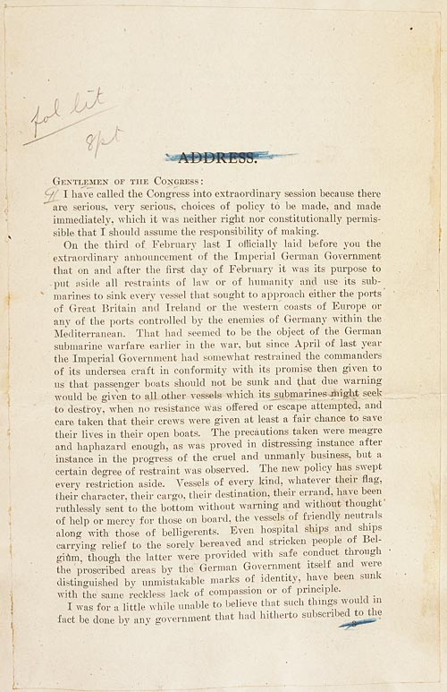

U.S. FOREIGN POLICY / WEEK 06
World War I and the struggle over peace
- 1914–1920
- Dr. Murat Toman
U.S. FOREIGN POLICY / WEEK 06
The main idea
- The United States entered World War I in 1917. President Wilson proposed a new international order, but war aims and peace commitments met resistance at home and abroad.
- Wilson’s language about self-determination appealed to many audiences, but its application was selective. To assess the policy, distinguish an announced principle from actual decisions and effects. Ask whose claims received support, whose did not, and what other interests shaped those differences.
U.S. FOREIGN POLICY / WEEK 06
Where this week fits in history
| When | Selected event |
|---|---|
| 1898 | War with Spain and overseas expansion |
| 1917 | U.S. entry into World War I |
| 1941 | Four Freedoms and entry into World War II |
U.S. FOREIGN POLICY / WEEK 06
History through a source

- This document is evidence of an official statement or decision. Its wording and appearance help us identify the source, but its promises still need to be checked against evidence of actions and results.
- Use the linked transcription or PDF to read the text. Ask who issued it, what it claims, and whose viewpoint is missing.
U.S. FOREIGN POLICY / WEEK 06
Key words explained
- Self-determination: The idea that peoples should have a say in their political status and government.
- Ratification: Formal approval of an agreement through the required political process.
U.S. FOREIGN POLICY / WEEK 06
Key words explained
- Collective security: An arrangement that treats threats to peace as a shared responsibility.
- Mobilization: Organizing people, money, and production for a major effort such as war.
U.S. FOREIGN POLICY / WEEK 06
Neutrality involved difficult choices
- Before entering the war, the United States remained connected to Europe through trade and finance. Maritime conflict and changing security concerns put pressure on neutrality.
- Americans disagreed about the costs of entering or staying out. Intervention was a political decision shaped by events, not an automatic outcome.
U.S. FOREIGN POLICY / WEEK 06
War required public resources and political authority
- The president could argue for war, but Congress had to authorize it and the country had to mobilize people and resources. Mobilization also brought pressure on civil liberties and political dissent.
- The ability to fight abroad depended on decisions at home. Domestic unity cannot simply be assumed from an official war declaration.
U.S. FOREIGN POLICY / WEEK 06
Wilson connected victory with a proposed new order
- The Fourteen Points set out principles for organizing peace. These included ideas about diplomacy and international cooperation.
- Such statements help reveal what leaders wanted to achieve. They do not prove that every group would benefit equally or that the proposals would be implemented.
U.S. FOREIGN POLICY / WEEK 06
International agreement still needed domestic support
- The Treaty of Versailles and the League of Nations involved commitments that faced opposition in the United States. Senate authority and partisan conflict mattered.
- A president bargains with other governments while also depending on support within the domestic political system. Success in one setting does not guarantee success in the other.
U.S. FOREIGN POLICY / WEEK 06
Rhetoric and results are different evidence
- Wilson’s language about self-determination appealed to many audiences, but its application was selective.
- To assess the policy, distinguish an announced principle from actual decisions and effects. Ask whose claims received support, whose did not, and what other interests shaped those differences.
U.S. FOREIGN POLICY / WEEK 06
Politics at home and abroad
- At home: Congress, the Senate, party conflict, and public debate shaped war and peace commitments.
- Abroad: The United States fought alongside partners and sought to influence the peace settlement.
- The connection: domestic support and resources affect what leaders can promise abroad. International events can change domestic priorities.
U.S. FOREIGN POLICY / WEEK 06
How power worked
| Form of influence | How it operated in this week |
|---|---|
| Hard power | Military forces, finance, and supplies contributed to the war effort. |
| Soft power | Democratic language and peace proposals could attract support, but their credibility depended on application. |
- Institutional bargaining is not itself soft power; attraction depends on perceived legitimacy and implementation.
U.S. FOREIGN POLICY / WEEK 06
A worked explanation
- Can a president promise international cooperation without securing support at home?
- A president can announce a goal, but lasting commitments depend on the relevant constitutional procedures, political support, and resources. The Versailles debate illustrates that limit.
- Why this matters: Wilson’s language about self-determination appealed to many audiences, but its application was selective. To assess the policy, distinguish an announced principle from actual decisions and effects. Ask whose claims received support, whose did not, and what other interests shaped those differences.
U.S. FOREIGN POLICY / WEEK 06
Practice with the documents
- Find one reason for war in Wilson’s war message.
- Find one proposed peace principle in the Fourteen Points.
- Explain who would need to cooperate for that principle to work, including actors inside the United States.
U.S. FOREIGN POLICY / WEEK 06
How to support an answer
- A claim is what you argue. Evidence is a specific passage, event, or finding that supports it. Explain the connection between them.
- Example structure: “The document claims ____. This suggests ____. It cannot by itself show ____.”
- A speech can establish what a speaker said. Evidence of actions and consequences is needed to judge whether the policy worked.
U.S. FOREIGN POLICY / WEEK 06
What to remember
- Neutrality can coexist with deep economic involvement.
- Domestic mobilization and democratic consent are not equivalent.
- Wilsonian language had audiences and uses beyond Washington’s control.
- International agreement does not guarantee domestic ratification.
U.S. FOREIGN POLICY / WEEK 06
Reading guide
- War Message to Congress (1917) A document from the period. Use it to identify what officials claimed or authorized, then check other evidence for the consequences. External source page; access may vary.
- Wilson’s Fourteen Points (1918) A document from the period. Use it to identify what officials claimed or authorized, then check other evidence for the consequences. External source page; access may vary.
War Message to Congress (1917) — External source page; access may vary.
Wilson’s Fourteen Points (1918) — External source page; access may vary.
U.S. FOREIGN POLICY / WEEK 06
Reading guide
- The League of Nations, 1920 A retired historical background essay. Use it for context, and compare its account with scholarship and other perspectives. External source page; access may vary.
- From Colony to Superpower: U.S. Foreign Relations since 1776 A scholarly narrative companion for historical periods. Select the relevant period; no unverified page assignments are supplied. Publisher record; full text may require institutional access.
The League of Nations, 1920 — External source page; access may vary.
Office of the Historian Milestones: retired series, retained online for historical reference; not a current-policy source.
From Colony to Superpower: U.S. Foreign Relations since 1776 — Publisher record; full text may require institutional access.
U.S. FOREIGN POLICY / WEEK 06
Video and audio guide
- The Versailles Treaty Fight Distinguish different objections to the Treaty of Versailles and League covenant.
- Over There: America Enters WWI Connect entry into the war to domestic mobilization and repression of dissent.
The Versailles Treaty Fight — Free provider page; external player may require consent or be region-dependent
February 2024; narrated historical interpretation.
Over There: America Enters WWI — Free provider page; external player may require consent or be region-dependent
April 14, 2017; audio and transcript. The excerpt of Wilson’s speech is an actor’s reading, identified as such by the program.
U.S. FOREIGN POLICY / WEEK 06
Using the sources carefully
- Linked readings and media offer particular viewpoints. Compare them with the lesson and other evidence. Some sources require institutional access.
- Media links and descriptions were checked when the course resources were prepared. Full playback was not tested.